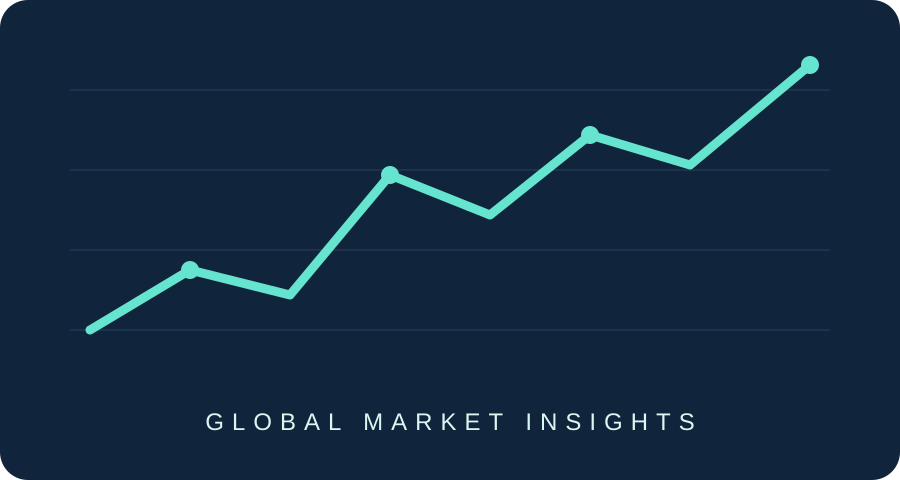

Market Insights
Plain-language explainers about economic developments, central bank decisions, inflation, interest rates, currencies, digital assets and market structure.

What this section will cover
Global economy
Explain inflation, employment, economic growth and the data that markets watch.
Central banks & rates
Understand policy rates, monetary decisions and why currency values can react.
Crypto developments
Explain major Bitcoin, blockchain, stablecoin and digital-asset developments with context.
Forex & currencies
Explore currency movements, market sessions, liquidity and trading conditions.
Start with our existing explainers
Editorial standards
Time-sensitive articles should show their publication or update date, distinguish confirmed facts from analysis, link to primary sources where possible and explain uncertainty. This section is educational, not a source of trading signals or price predictions.
We will add current market coverage as research and publishing capacity allow. No live market feed or real-time price service is promised here.